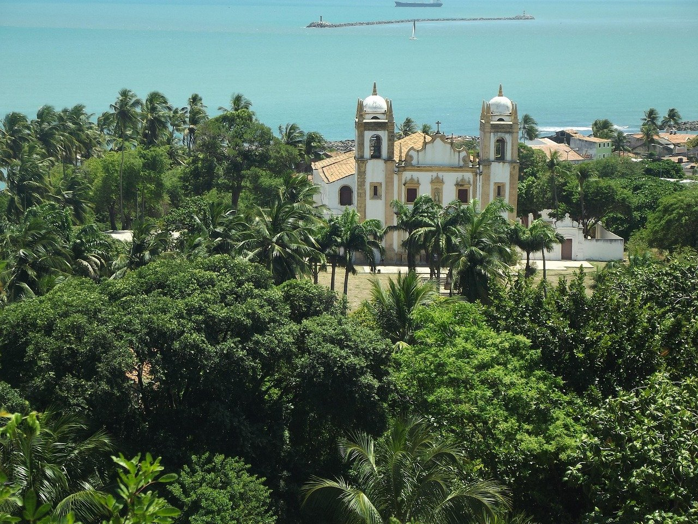

Everything About Pernambuco
Your Complete Immigration and Lifestyle Guide to Recife
Quick Facts at a Glance
State Overview
Pernambuco is located in the Northeast region of Brazil with its capital in Recife. With a population of 9,600,000, Pernambuco offers a unique blend of opportunities and lifestyle experiences. The state is characterized by its Sugar Production, Manufacturing, Tourism, Services and is known for being Very welcoming, cultural diversity.
Temperature Range: 24-30°C
Average Monthly Salary: R$ 2,800-6,000 average monthly salary
Major Cities
Discover the main urban centers in Pernambuco:
- Recife (capital, 1.5m)
- Jaboatão dos Guararapes (650k)
- Olinda (380k, historic)
Economy & Employment
Pernambuco's economy is built on Sugar Production, Manufacturing, Tourism, Services. The state offers significant opportunities for both local and international professionals seeking employment and business ventures.
Economic Sectors:
- Sugarcane and alcohol industry
- Textile and apparel manufacturing
- Petrochemicals and chemicals
- Tourism and services
Job Opportunities by Sector:
- Sugar industry and ethanol
- Manufacturing and textiles
- Tourism and hospitality
- Technology
Education & Universities
Pernambuco boasts several excellent universities and educational institutions, making it ideal for students and families seeking quality education.
Leading Universities:
- Federal University of Pernambuco (UFPE)
- Catholic University of Pernambuco (Unicap)
Cost of Living & Housing
Overall Cost of Living
Moderate - Good value
Housing Costs
1-Bedroom Apartment: R$ 1,200-3,000 for 1-bedroom apartment
This varies depending on location - central areas are more expensive, while suburbs offer better value.
R$ 1,200-3,000 for 1-bedroom apartment (city center)
20-30% less in suburbs
Local restaurants: R$ 25-50
Groceries: Very affordable
Public transport: R$ 5-10 per ride
Uber available in major cities
Gym: R$ 80-150/month
Movies: R$ 30-50
🌡️ Climate & Geography
Climate Details
Climate Type: Tropical - Warm year-round, humid
Temperature Range: 24-30°C
What to Expect:
- Weather patterns and seasonal variations
- Best times to visit based on climate
- Appropriate clothing and preparations needed
- Humidity and rainfall patterns
Healthcare System
Public Healthcare (SUS): Available to all residents, including immigrants
Private Healthcare: Good hospitals and medical services
Healthcare Access:
- Universal health system (SUS) coverage
- Quality private hospitals and clinics
- Dental and specialist services available
- Medications available at reasonable costs
- International health insurance options
🚗 Transportation
Primary Mode: Air (Recife airport), highways, buses
Getting Around:
- Public transportation (buses, metro where available)
- Taxi and ride-sharing services (Uber, 99)
- Inter-city bus services
- Air travel for longer distances
- Bike-friendly areas in many cities
Culture & Main Attractions
Pernambuco is known for Sugarcane products, fresh seafood, ceviche, spicy cuisine. The state offers numerous attractions and cultural experiences for residents and visitors.
Top Attractions & Activities:
- Recife Antigo (old quarter)
- Olinda colonial town (UNESCO)
- Beautiful beaches
- Frevo music and culture
- Beach resorts (Serrambi, Maragogi)
Local Food Culture
Pernambuco is famous for: Sugarcane products, fresh seafood, ceviche, spicy cuisine
What Makes Pernambuco Special
- Rich cultural heritage
- Vibrant music scene (frevo)
- Historic colonial architecture
- Beach lifestyle
🌙 Nightlife & Entertainment
Pernambuco offers: Live frevo music, clubs, beach bars, cultural events
Entertainment Options:
- Bars and clubs in major cities
- Live music venues and cultural shows
- Restaurants and dining experiences
- Beach activities and water sports
- Cultural festivals and events
Immigration & Expat Tips
- Learn Portuguese - essential for integration and employment
- Register with local authorities within required timeframe
- Open a bank account early - necessary for housing and employment
- Get a CPF (tax ID) - required for most transactions
- Explore neighborhoods before committing to housing
- Join expat groups for support and networking
- Budget accordingly based on your lifestyle
- Familiarize yourself with local customs and culture
- Keep important documents organized
- Stay updated on visa requirements and renewals
Why Choose Pernambuco?
- Welcoming Community: Very welcoming, cultural diversity
- Cost of Living: Moderate - Good value
- Employment: Strong opportunities in multiple sectors
- Education: Quality universities and schools
- Healthcare: Accessible and affordable medical services
- Culture: Rich traditions and modern amenities
- Lifestyle: Excellent balance of work and leisure
- Connectivity: Good transportation and communication
At a Glance Comparison
| Aspect | Rating | Details |
|---|---|---|
| Cost of Living | Moderate - Good value | |
| Job Opportunities | Multiple sectors with growth potential | |
| Education Quality | Excellent universities available | |
| Healthcare | Good hospitals and medical services | |
| Safety & Security | Varies by neighborhood - research before moving | |
| Climate | Tropical - Warm year-round, humid | |
| Entertainment & Culture | Rich cultural experiences and activities | |
| Expat Community | Growing international presence |
❓ Frequently Asked Questions
This depends on your situation:
- Work Visa: If you have a job offer
- Investor Visa: If investing in a business
- Student Visa: To study at universities
- Temporary Resident: For renewable 2-year visas
- Retirement Visa: If you have sufficient income
Consult the Brazilian consulate for specific requirements.
While you can initially function without Portuguese, it's highly recommended to learn it because:
- Employment opportunities increase significantly
- Social integration becomes easier
- Daily transactions are simpler
- You can better enjoy the culture
- Government services require it
Budget Estimate (single person):
- Rent: R$ 1,200-3,000 for 1-bedroom apartment for 1-bedroom
- Food & Groceries: R$ 600-1,000
- Transportation: R$ 100-200
- Utilities: R$ 150-250
- Entertainment: R$ 200-400
- Total: R$ 2,500-5,500 per month
Options:
- SUS (Public): Free/minimal cost, available to residents
- Private: Better facilities, faster service, costs R$ 200-500/month
- International Insurance: Recommended for comprehensive coverage
Most residents use a combination of public and private care.
Pernambuco's job market is characterized by:
- Growth sectors: ['Sugar industry and ethanol', 'Manufacturing and textiles', 'Tourism and hospitality', 'Technology']
- Competitive salaries: R$ 2,800-6,000 average monthly salary
- Portuguese requirement: Essential for most jobs
- Visa sponsorship: Available through employers
- Remote work: Growing opportunities
Ready to Start Your Immigration Journey to Pernambuco?
We're here to help you navigate the immigration process and settle into your new home in Pernambuco!
📚 Additional Resources
- Brazilian government official website
- Local immigration office (Polícia Federal)
- Expat community forums and groups
- State tourism bureau
- Chamber of commerce
- International schools and universities
- Real estate platforms
- Job boards and recruitment agencies
State-specific context

Pernambuco has a distinct economic and administrative profile. Most immigration registrations occur in Recife, and access can vary by city.
Decision support
Plan for realistic timelines and ensure documentation matches your stated purpose. Overly optimistic assumptions often lead to delays.
What happens next
If you need immigration guidance, prepare your key documents and questions before requesting support.
Compliance disclaimer
Information here is general and does not guarantee outcomes. Always check official guidance.
Additional guidance for Pernambuco
Focus on documentation integrity, realistic timelines, and local administrative steps. These factors are more decisive than marketing claims.
Compliance disclaimer
Information is provided for awareness and may change without notice.
Additional depth for Pernambuco
Use official checklists, confirm document validity windows, and avoid assumptions about eligibility. Most delays come from documentation issues, not policy complexity.
Compliance disclaimer
Always verify requirements with official sources and qualified professionals when necessary.
Additional depth for Pernambuco
Focus on realistic planning, document integrity, and compliance steps. These are the most common reasons for delays or refusals.
Compliance disclaimer
Always verify requirements with official sources.
Additional depth for Pernambuco
Prioritize documentation accuracy and realistic timelines. These factors reduce the risk of delays or refusals.
Compliance disclaimer
Requirements can change. Always verify with official sources.
Deeper guidance for Pernambuco
Plan for multi-step processing, prioritize documentation accuracy, and confirm official timelines before committing resources.
Compliance disclaimer
Requirements can change. Always verify with official sources.
Additional depth for Pernambuco
Plan for document validity windows and confirm local registration requirements before arrival.
Compliance disclaimer
Requirements can change. Always verify with official sources.
Additional depth for Pernambuco
Maintain accurate records, keep document copies, and check official timelines before travel.
Compliance disclaimer
Requirements can change. Verify official guidance.
Additional depth for Pernambuco
Plan for delays and keep all documentation consistent across applications.
Compliance disclaimer
Always verify requirements with official sources.
Additional depth for Pernambuco
Keep documentation consistent and avoid assumptions about eligibility or timelines.
Compliance disclaimer
Requirements can change. Always verify official guidance.